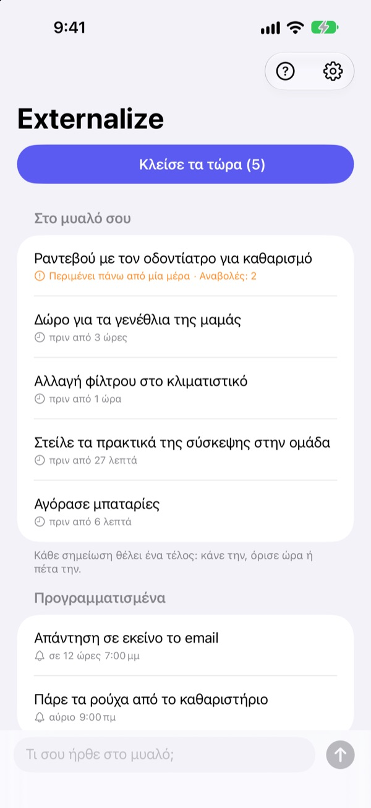
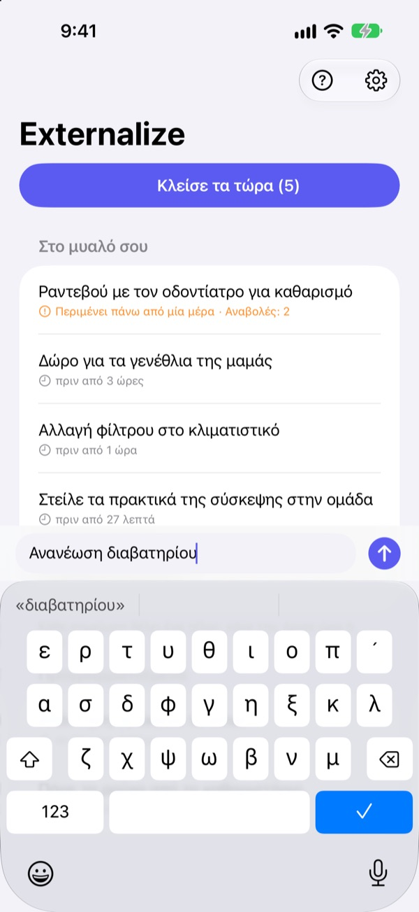
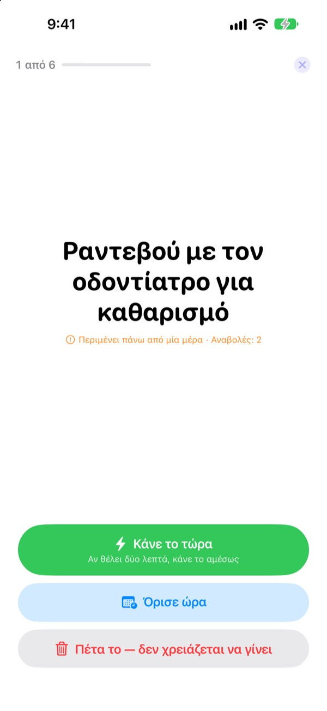
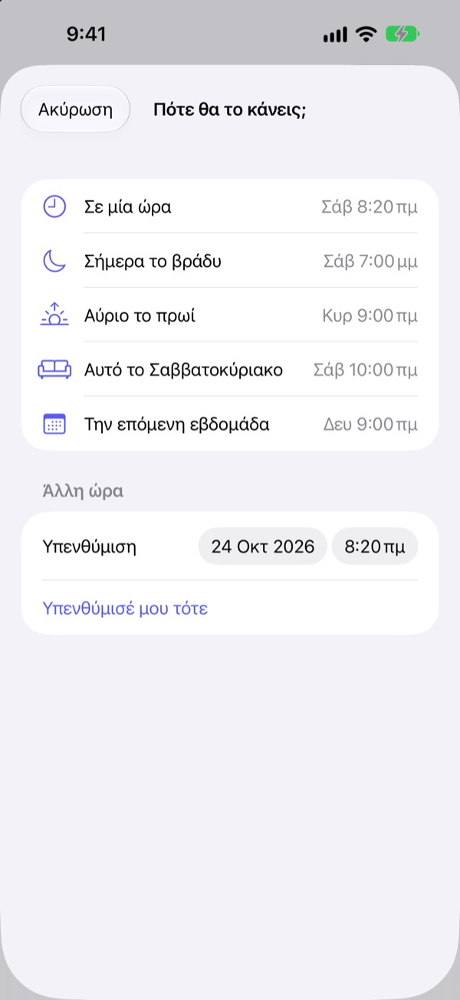

Σημείωσέ το τώρα.
Κλείσ’ το το βράδυ.
«Α, ναι, πρέπει να…» Βγάλ’ το από το μυαλό σου με λίγες λέξεις και άφησέ το. Το βράδυ, κλείσε ό,τι έμεινε, ένα ένα.
Όλες οι λειτουργίες είναι δωρεάν. Χωρίς λογαριασμό και σύνδεση.

Δοκίμασέ το εδώ
Γράψε κάτι που σε απασχολεί ή πάτησε ένα παράδειγμα. Μετά πάτησε «Κλείσε τα τώρα» και δώσε τέλος στο καθένα.
Και τα μικρά πιάνουν χώρο στο μυαλό
Στο ντους, στο κόκκινο φανάρι, λίγο πριν κοιμηθείς: «Πρέπει να κάνω εκείνο». Δεν έχεις πού να το γράψεις, οπότε το κρατάς στο μυαλό, και ό,τι κάνεις εκείνη την ώρα χάνει τη συγκέντρωσή του. Οι εφαρμογές εργασιών ζητούν πρώτα λίστα και προθεσμία, και το γράψιμο γίνεται κι αυτό δουλειά.
Τρία δευτερόλεπτα και ξέχνα το
Άνοιξε την εφαρμογή και γράψε στη γραμμή στο κάτω μέρος. Χωρίς λίστες, φακέλους ή προθεσμίες.
Πάτα το widget στην οθόνη κλειδώματος και ανοίγει σε κενή γραμμή. Πες στη Siri Θυμήσου στο Externalize ή βάλ’ το στο κουμπί Ενέργειας, και αποθηκεύεται χωρίς να ανοίξεις την εφαρμογή.

Το βράδυ, ένα ένα
Αν έχει μείνει κάτι, λαμβάνεις μία υπενθύμιση στις 21:00. Αν δεν έμεινε τίποτα, καμία ειδοποίηση.
Μόλις ξεκινήσεις, τα θέματα εμφανίζονται ένα ένα, μεγάλα και καθαρά. Διάλεξε «Κάνε το τώρα», «Όρισε ώρα» ή «Πέτα το» και έρχεται το επόμενο. Αν θέλει δύο λεπτά, βάλε το χρονόμετρο και τελείωσέ το αμέσως.

Τίποτα δεν μένει να σαπίζει
Διάλεξε «Σε μία ώρα», «Σήμερα το βράδυ», «Αύριο το πρωί», «Αυτό το Σαββατοκύριακο» ή «Την επόμενη εβδομάδα» και επιστρέφει τότε. Από την ειδοποίηση πατάς κατευθείαν «Έγινε», «Αύριο το πρωί» ή «Πέτα το».
Ό,τι περιμένει πάνω από μία μέρα κι ό,τι αναβάλλεις ξανά και ξανά σημειώνεται, ώστε να φαίνεται τι σου ξεφεύγει συνέχεια.

Ξεκίνα σε τρία βήματα
- 1
Γράψ’ το
Λίγες λέξεις στην εφαρμογή, στο widget της οθόνης κλειδώματος ή με τη Siri, ό,τι είναι πιο κοντά.
- 2
Επίτρεψε τις ειδοποιήσεις
Ρωτάει μία φορά, την πρώτη φορά που γράφεις κάτι. Χρησιμεύουν για τη βραδινή υπενθύμιση και τις ώρες που ορίζεις.
- 3
Κλείσ’ το το βράδυ
Πάτα την υπενθύμιση ή «Κλείσε τα τώρα» και δώσε τέλος σε κάθε θέμα.
Κατευθείαν από τη λίστα
- Πάτημα σε θέμα
- επιλογή «Έγινε», «Όρισε ώρα» ή «Πέτα το»
- Σάρωση δεξιά
- Έγινε (φεύγει από τη λίστα)
- Σάρωση αριστερά
- Πέτα το, ή «Αναβολή» για να ορίσεις ώρα
- Κλείσε τα τώρα
- πέρασε ό,τι έμεινε ένα ένα
- Θυμήσου στο Externalize
- πες το στη Siri χωρίς να ανοίξεις την εφαρμογή
- Ρυθμίσεις ▸ Βραδινή υπενθύμιση
- άλλαξε την ώρα ή απενεργοποίησέ την
Όταν ορίζεις ώρα, «Σήμερα το βράδυ» σημαίνει 19:00, «Αύριο το πρωί» 9:00, «Αυτό το Σαββατοκύριακο» Σάββατο 10:00 και «Την επόμενη εβδομάδα» Δευτέρα 9:00. Μπορείς επίσης να διαλέξεις όποια ημερομηνία και ώρα θέλεις.
Συχνές ερωτήσεις
Μπορώ να γράψω κάτι χωρίς να ανοίξω την εφαρμογή;
Ναι. Πες στη Siri Θυμήσου στο Externalize: θα ρωτήσει τι να γράψει και θα το αποθηκεύσει. Αντιστοίχισε τη συντόμευση «Σημείωσέ το» στο κουμπί Ενέργειας από τις Ρυθμίσεις και αρκεί ένα πάτημα.
Πώς προσθέτω το widget στην οθόνη κλειδώματος;
Άγγιξε παρατεταμένα την οθόνη κλειδώματος, πάτα Προσαρμογή και διάλεξε την οθόνη κλειδώματος, πάτα την περιοχή των widget και πρόσθεσε το Externalize. Με ένα πάτημα ανοίγει κενή γραμμή, και δείχνει πόσα έμειναν. Υπάρχει και μικρό widget για την οθόνη Αφετηρίας.
Μπορώ να αλλάξω ή να κλείσω τη βραδινή υπενθύμιση;
Πάτα το γρανάζι πάνω δεξιά ▸ Βραδινή υπενθύμιση για να αλλάξεις την ώρα ή να την κλείσεις. Από προεπιλογή είναι στις 21:00 και δεν χτυπά τις μέρες που δεν έμεινε τίποτα.
Δεν λαμβάνω ειδοποιήσεις.
Αν οι ρυθμίσεις του Externalize λένε ότι οι ειδοποιήσεις είναι κλειστές, πάτα το κουμπί εκεί για να τις ενεργοποιήσεις στις Ρυθμίσεις του iPhone. Τις μέρες που δεν έμεινε τίποτα, δεν έρχεται βραδινή υπενθύμιση, και είναι φυσιολογικό.
Πώς επιστρέφει κάτι με ορισμένη ώρα;
Την ώρα που διάλεξες έρχεται ειδοποίηση. Άγγιξέ την παρατεταμένα για να διαλέξεις «Έγινε», «Αύριο το πρωί» ή «Πέτα το». Αν δεν κάνεις τίποτα, γυρίζει στο «Στο μυαλό σου» και το κλείνεις την επόμενη φορά.
Μπορώ να επαναφέρω κάτι που έκανα «Έγινε» ή «Πέτα το»;
Όχι. Ό,τι κλείνει φεύγει από τη λίστα και δεν υπάρχει αρχείο. Αν δεν είσαι σίγουρος, όρισε ώρα αντί να το πετάξεις.
Μεταφέρονται οι σημειώσεις σε νέο iPhone;
Όχι. Όλα μένουν σε αυτή τη συσκευή και δεν στέλνονται ποτέ στο iCloud ή σε διακομιστή. Αν διαγράψεις την εφαρμογή, διαγράφονται κι αυτά.
Σε ποιες συσκευές λειτουργεί;
Σε iPhone με iOS 17 ή νεότερο.
Ερωτήσεις ή κάποιο σφάλμα; Γράψε στο mizzking75@gmail.com. Αν αναφέρεις μοντέλο iPhone και έκδοση iOS, θα το εξετάσουμε πιο γρήγορα.